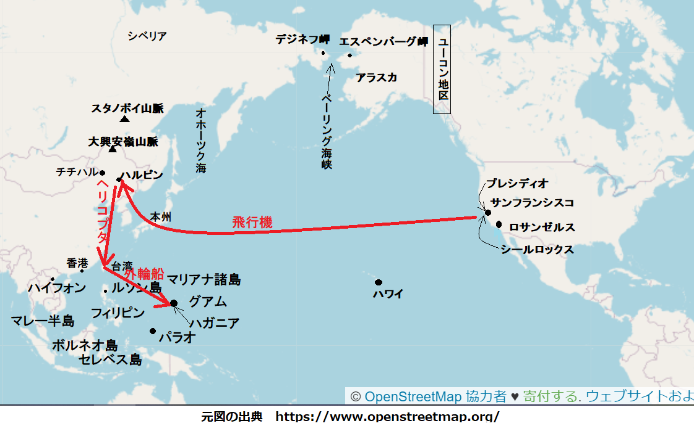

時は２０００年。アメリカは戦時下にあり、全力でアジア連合と戦っていた。でもアメリカ人は軍の将校ですら休養する余裕があった。休養は必須であり、すさまじい戦いから心を
リチャード・リスター中尉は水泳パンツを履き、浜ゴザに座り、サンフランシスコ湾外にあるシールロックスで、沖合の太平洋を不機嫌に眺め、日焼けした両膝を両手で抱え、褐色の顔を引きつらせていた。
横に座っているサリー・アンバーに言った。
「戦争の話はやめよう。僕たちのことを話そう」
サリーが黒い瞳を妙にくりくりして、顔を向けて真面目に言った。
「そんな顔をしないで、ディック（訳注）。特にあなたは重要な部門に勤めている。からかっているんじゃない、本気よ。あなたの軍用細菌生物局がなければ、この国はどうなる？ アジア連合の細菌で全滅させられる」
（訳注）ディックはリチャードの愛称
アラスカは重要な鍵であり、そこにカーン本人がいる。敵のベッカリ電界を突破して、奴を殺しさえすれば、アジア連合全体が壊れるだろう。奴が居てこそ、元来は敵同士の連中、たとえばシベリア系ロシア人、ジャップ、中国人、タタール人などをまとめ上げられる。奴がいなければ、連中は数時間で互いの喉を掻き切るだろう」
「じゃあ、なぜ誰か何かしないの？」
とサリーがいたずらっぽく訊いた。
「確かに試したさ。十数人の勇敢なアメリカ人が敵の前線を突破して、奴を暗殺しようとしたが、残念ながら捕まって、ひどい拷問を受けて、死んだ」
サリーが震えて浜ゴザの一角を引っ張って、自分の肩に巻き付けて、
「そんなの勇敢じゃない」
「君の勇気とやらに賭けたいね」
「なぜアメリカは軍隊をアジアに上陸させないの？」
「君も知っての通り、アメリカが海を支配したのは、６ヶ月前にマリアナ諸島からカーン艦隊を全滅させてからだが、奴はアジアに１千万の兵士を抱えている。そんなところに我が５百万人を上陸させて、どうなる。駄目だ、狂人カーンはアラスカでなんとかして叩きつぶさねばならない」
不意にサリーが言い切った。
「カーンは狂人じゃない」
「なんで知っているんだ」
「あ、あ、会ったことがある」
「アジアに行っていたとは知らなかったなあ」
「あなたの知らないことがいっぱいある。父が死んで、私は金持ちになった。あちこち旅行した。３年前は東都ハルビンに居たし、さらに西都モスクワにも行った」
「そうか、狂人カーンに会ったのか。ステファニー王女を見たことは？ どんな人？ 美人だとか」
サリーが肩をすくめ、陽気に答えた。
「ええ、美人が好きなら、その通りね。陰気で、ハザールの混血で、年は私と同じくらいよ。なぜ訊くの？ あなたの小話を続けて」
「僕たちのことかな？」
サリーが細い手を伸ばし、リスターの膝を軽く叩いて、
「いいえ、ベッカリ電界のことよ。なんなの？ 作動原理は？」
リスターが困って眉をしかめ、女性でも分る言葉で説明しようと努めた。
「モレルの渦電流実験の応用だよ。僕は植物学者で、電気技師じゃないけど、磁力線を屈折させる事ぐらいは知っている。
このように働くんだ。アラスカ前線では、両軍の上空に、電磁力の屋根、つまり磁場を科学者達が造った。どんな砲弾や爆弾も、この磁場を通過すると瞬時に白熱する。そのわけは渦電流が磁場によって発生して、そのため空中爆発する。
どの都市も同じようにベッカリ電界で守られている。知ってるだろ、ヘリコプタがサンフランシスコ市の境を出るときは、一旦止まって、鉄で
「弾頭はどうなの？」
「もちろん弾頭は電界を通過できるけど、弾頭でどんな大打撃を与えられるか？ だって我が軍のヘリコプタがどんな敵の航空隊も打ち落とせるよ、敵が弾頭を落として、都市に損害を与えるとっくの前にだ。それにアラスカ前線について言えば、両軍がやれそうなことはせいぜい、アラスカ州隣のユーコン丘に岩片を少々ばらまく程度だろう。
嫌だね、戦況は
「そう思っているの？」
とサリー・アンバーが妙な声色で言った。突然、話題を変えるかのように、すべやかな褐色の肩をすくめて、さりげなくこう訊いた。
「アレン提督が土曜日にここへいらっしゃるの？」
「いや、来ないと思う」
とリスターがぐっと自制した。アレン提督がリスターに極秘で教えてくれたのは、アジア軍のアラスカ補給路を断つために、ベーリング海峡を集中攻撃する由。太平洋艦隊はマリアナ諸島近海で交戦して以来、
リスターが目をむいて、ぴしゃり。
「なぜそれを？ 知っていたとしても言わないよ、だろ」
「ふふふ、ばかね。ちょうど考えていたのよ、提督とあなたと、諜報部のジム・キャス大尉を自宅に呼んで、土曜日に夕食をごちそうしようと。だって、まだジム・キャス大尉に会ったことがないのに、あなたがよく話すものだから興味がある。けっきょく、ディックの友人なら……」
と言って、サリーが優しく微笑んだ。
リスターが首を横に振って、言った。
「キャス大尉は友人じゃない。軍事情報部の将校に過ぎない。時々僕の研究室に乱入して、情報や、もめ事を探して、ほじくり回す。ぞっとするよ。あんな冷血漢は知らない。実母を銃殺隊に引き渡しかねない、それで戦争に勝てると思えば」
「あなたか私か、どっちか国家に貢献できると思わない？ それに大尉の冷血にも引かれる。会ってみたい」
「好きにしな。もう一回泳ごうか」
サリーが不服そうに唇をとんがらせて、きっぱり言った。
「いやよ。あんな緑色の泥水だらけでは泳いでも楽しくない。町へ帰りましょう」
「汚いね。あれは糸状藻類の変種だ。一般的に
午後２時前、２人を乗せたサリーの自家用ヘリコプタが着地した所は、サンフランシスコ半島北端のプレシディオ基地に隣接する建物の正面、この建物を軍用細菌生物局のリスターが地方事務所・兼・研究所として使っている。同乗していたリスターが仕方なく降りて、操縦しているサリーに向き直り、意気込んで訊いた。
「今晩どう？」
サリーが首を振って、
「ごめんなさい、親族と夕食しなければなりません」
「じゃあ、あしたの晩は？」
「むり……」
「でも会ってくれ。ここに僕が滞在できるかは誰にも分らないし、一瞬も無駄にしたくない」
「なぜ？ 転勤を希望しているの？」
「いや、でも……」
注意をそらす人物がやってきた。リスターが振り向いて敬礼したのが、陰気で不気味な陸軍将校、建物の階段を降りてきた。
「サリー、この方がお待ちかねのキャス大尉だ。今日いっぱい滞在される。大尉、こちらは僕がよく話していたサリー・アンバー嬢です」
ジム・キャス大尉がサリーの手を取って、冷たい碧眼で、品定めするようにじっと見て、
「ディックが夢中になるのも不思議じゃないな。でくの坊だと思っていたが、謝るよ。こんなに趣味がいいとは思っていなかった」
キャス大尉がサリーを凝視して、眉をひそめ、
「あのう、以前会ったことがありませんか」
「もしそうなら、忘れっこないでしょうね」
とサリーが言った。
意外やキャス大尉は、サリーのヘリコプタが飛んで行って見えなくなったあとも、じっと立ちすくんで眺めていた。
キャス大尉がわだかまりを解けないまま、翌日リスターの所へぶらり立ち寄った。上っ張りを着た生物学者リスターは研究室で戦時業務に忙しく、６箇所の沿岸都市の飲料水を調べており、大尉の話を聞く余裕はほとんどない。
リスターがブツブツ言っている。
「サンフランシスコ湾東部オークランドの細菌は１
 当り７個で、正常。カリフォルニア州のモントレイは11個で、安全。メキシコ湾岸ベラクルスの飲料水でこんな大量の藻を見たことがあるか。窓の敷居にあるビーカーを見ろ。２時間日光に暴露しただけで、豆汁のような緑だ。さらに、シカゴも同じだとか。そして妙なことに、ロンドンからも同じ報告が」
当り７個で、正常。カリフォルニア州のモントレイは11個で、安全。メキシコ湾岸ベラクルスの飲料水でこんな大量の藻を見たことがあるか。窓の敷居にあるビーカーを見ろ。２時間日光に暴露しただけで、豆汁のような緑だ。さらに、シカゴも同じだとか。そして妙なことに、ロンドンからも同じ報告が」キャス大尉が窓の外をぼんやり見ながら、考え込んで尋ねた。
「あの木々の綿毛はなんだ？ あんなのは見たことがない」
「ええ、知っていました。木に生えるただの地衣類です。サルオガセモドキのようなものです。つまり隠花植物、胞子で増える植物です。きっと関係が……。糸状藻類、ちょうど藻のようなものです」
「それで？ それがどうした？」
「無害ですが、例外があって、海中や飲料水に藻がある場合、これをかき混ぜると、地衣類や菌類もかき混ぜられます。隠花植物もその一種であり、石炭紀に栄えた植物です」
「いま２番目の石炭紀にいるってことか」
「ハハハ、まさか。いくつかの仮説があって、石炭紀の原因には、二酸化炭素が空気中に高濃縮したとか、全世界的に熱帯気候だったとか、太陽黒点が活発になり、地上へ電子嵐を頻繁に激しく吹き付けた結果、空気中に大量のオゾンが発生したとか……。オゾンは酸素原子が３個つながった重い分子であり、殺人光線を取り除くことができます」
「殺人光線って？ それはなんだ」
とキャス大尉が耳をそばだてて、叫んだ。リスター個人にはほとんど注目してこなかったが、まさに自分の仕事に関係があり、軍事諜報部なら知るべき何かがある。
リスターがまた笑った。
「ハハハ、殺人光線と言っても、軍が興味を持つようなものじゃありませんよ。日光に含まれる目に見えない光であり、生物には致命的なものです。オゾンはこれを除去します。
これぞ自然が作り出したバランスの極みですが、大気圏の外層には通常十分なオゾンがあって、人間に致命的な不可視光線を遮断する一方、適正な光を通し、藻を相応な場所に生育させます。なのに、もし……ああ、不可解だ」
「何が不可解だ」
「いや、べつに」
キャス大尉がずばり切り込んだ。
「リスター、君には物質と親密になれる才能があるようだ。でも女性と一緒に居たのは解せないな」
「どういう意味ですか」
と訊いたリスターにはやましい予感があった。
「たとえば、艦隊行動について、アンバー嬢に何か言わなかったか」
リスターが赤面した。もちろん言わなかったが、言葉の端々から察したかもしれない。でも、たとえ分ったとして、どうなる。
「もちろん、艦隊のことなど言いませんよ。いま、アレン提督に会いに行こうと思っていました」
提督の部屋に着くと、リスターはすぐ要点を述べた。
「提督、私はずっと藻のことを考えていました。この調子ではますます増えて、艦隊がベーリング海峡に到着するまでに、藻に絡まれて動けなくなるかもしれません」
「わしもそれを考えていた」
とアレン提督が重々しく言ったものの、眼がきらきら輝いているのを、リスターは全く見抜けなかった。
リスターが言った。
「提督は最新報告を聞かれましたか。シカゴ川は詰まっています。あらゆる場所で藻が水道本管を詰まらせ始めています。ここサンフランシスコでは厄介者になりつつあります。テキサスではサルオガセモドキが大量に集まり始めて、木々の枝を折っています。
国内鉄道の枕木はすべて、やわい台木に成り果てて、雑多な菌類、ホコリタケやら百種もの変種が付いています。腐敗した結果、脱線を引き起こしています。雨の多い地域では、実際に列車は膨大な地衣類の山を掻き分けて進まねばなりませんし、地衣類は日陰にある切れ端や、半分腐った枕木を、理想的な環境と見なし、活発に繁殖します」
提督が応じて、
「アジアではもっと悪いぞ。部下の話では、凍土帯の地衣類が丘になり、線路上で干し草山のようになったり、藻が川をせき止めて洪水を引き起こしたりしておるそうだ。だから、全艦隊が藻屑に
「それは知りませんでした」
「そうか、内緒にして、誰にも漏らすなよ。この秘密情報はたったいま情報機関から届いたばかりだ。原因に思い当たることはないか。ちょうど君を迎えに行こうとしていたところだった」
「何か起こって、大気外層のオゾンが異常に増えて、このオゾンが日光の当該波長を吸収したのでしょうが、通常であればこの波長が藻の増殖を食い止めてくれます」
だがアレン提督は実務的な人間であり、そんな科学的説明など、聞く耳を持たない。こう提案した。
「アジア戦争で、これが新しい武器にならないか」
「提督、思ってもいませんでした。カーンが、よもやこの武器を使うことはないでしょうが、この武器は我々よりも敵側を大いに痛めつけるように思われます」
その晩、ディック・リスターとサリー・アンバーがレストランに着席したとき、サリーが藻のことを蒸し返した。
「アメリカよりアジアがひどいそうね」
「どうやって知ったんだ？」
「じゃあ、そうなのね。ええ、誰もがディックのように口がかたいわけじゃない」
とサリーが澄まして言い、無邪気で愛らしい黒目を上げた。
「あれはアジアの兵器だと思わない？ いえ、ここよりシベリアがひどいようだから、アメリカの兵器なの？」
リスターが
「ぼ、ぼくが知るはずないだろ」
「でも確実に何か知っているね」
リスターが不意を突かれて、うろたえ、
「えっ、おお、ああ、そうだよ。ベッカリ電界が……」
と中断して、いらついて眉をしかめ、うめいて、
「サリー、興味を持つと、その
「たぶん、そうね」
と言ったサリーは笑って、上品な細い眉を上げた。
「サリー、冗談言ってる場合じゃない。それよりずっと軽い罪でも、やられているんだ」
サリーが軽くいなして、
「キャス大尉があなたに教えていたじゃない」
「どうやって知ったんだ」
「やり方？ ええ、私は男性の心が正確に読める、女性なら誰でもできるよ。キャス大尉は私を嫌っている。私を好きになれない人は、嫌いだ」
とサリーが口をとんがらせてきっぱり言った。
「うれしいよ。僕には好都合だ、僕以外きみを好きにならなくて」
翌晩この会話を思い出しているとき、キャス大尉がドタドタやってきた。リスターは研究室で遅くまで分析作業をしていた。
キャス大尉が実験容器を横目で見て、
「ゴミ
「けさサンフランシスコ湾の金門海峡は通過できないでしょう」
とリスターが応じて、最新ニュースを詳しく説明した。北西部では列車時刻が混乱し、どの港でも船舶が動けなくなり、外洋でさえ、特に北太平洋ではそうだとか。
だが、キャス大尉は聞いていなかった。ガラス板を乗せたリスターの机に寄りかかり、ガラスの下に敷いた写真を熱心に見ていた。
「これは？」
とキャス大尉が切り込んだ。
「サリーですよ。よく撮れていません、ぶれています」
キャス大尉はふーんと言って、眼を細めた。それから、見当違いなことを言った。
「藻の大量発生に心当たりは？」
リスターが用心深く口をすぼめて、
「はい。でも生煮えで発表するつもりはありません。要点が証明できたら、ワシントンへ報告します、諜報部じゃなく」
「そうか、諜報部には何も言いたくないようだが、君の為になることを教えてやろう。いいか、怒るなよ。私は戦争が始まる３年前に、ハルビン公使館に配属されていた。カーンが支配する東都のことを大いに学んだ。たぶんステファニー王女のことは聞いたことがないだろうな」
「ええ、どんな女性ですか」
「せっつくな。ステファニーはカーンの大蔵大臣ドミトリ・カザロフの娘だ。大臣が15年前、日本軍によって殺されたので、カーンがステファニーを引き取って、教育した。大っぴらにされていないが、ハルビンのような街では人の口に上り、私がいた頃も噂になっていた。どうやらカーンが与えた教育は変な……非常に奇妙なものだった」
「どういうことですか」
「つまり、史上最高のスパイに育てた。主要な言語を学び、現地人のように話す。どんな立場、どんな社会的地位でもびくともしないように鍛えられた。軍事科学も学び、重要な情報を見分けられるようになった。そして絶世の美女になれそうだと
「しかし、分からない……」
「だろうな。ステファニーが16才の時、つまり３年前私がハルビンにいた時、カーンがステファニーの顔出しを禁じたが、その理由は海外諜報員に容貌がばれて、利用価値が減じないようにするためだ。扉から出るときは、誰も150
 以内に入れさせず、宮廷の親友以外、顔を見た者はいない」
以内に入れさせず、宮廷の親友以外、顔を見た者はいない」ここでキャス大尉が悪意むき出しでニヤリ、
「だが、私はたまたま視力が良くて、ヘリコプタ搭乗員のように、規制距離から監視したものだ。ある時など、夜間望遠鏡を向けたりした。間違いなく美人だ」
リスターがきつい口調で、
「後悔している風には見えませんが……」
「まあね。とにかく戦争が始まってから、噂が飛び交ったのが、この美貌のアジア女スパイ、つまりくのいちのことだ。これは私見だがくのいちはステファニー王女であり、サリー・アンバーがステファニーに似ていることだ」
リスターが怒って、声が上ずり、
「全く正気じゃない。ばかげています。サリーはアジア人じゃありません。東洋人に見えますか。肌は大理石のように白い、つまり日焼けしていないときですが……。話しぶりも完璧なアメリカ人です。目は……」
ここで止まり、おもむろにサリー・アンバーの目を思い浮かべた。黒くて純粋で愛らしいが、間違いなくかすかに東洋的な面影があった。
「その通り」
とキャス大尉が言い切ったのは、リスターが黙っていたからだ。キャス大尉が続けた。
「リスター中尉、君はどのくらいの期間、あの女を知っているのか。黄褐色肌は日焼けで、素肌じゃないと確実に言えるか。年齢も当てはまるのじゃないか。長く友達つきあいをするのは、君のように重要な軍事知識を持っている人間じゃないか。君から何か得たかどうかは別な次元だが、聞こうとしたか、誘導質問か、そんなことをしたかどうか、知るべきだ」
してない、とリスターが吐き捨ててから、うめいた。一度ならずあの女の興味をたしなめたことがあったからだ。
「いいですか、大尉。サリーが敵のスパイとは信じられないが、もしそうなら、僕はアメリカ優先ですし、サリーも大好きですし……。そっとしておいてくれませんか、そして僕に
「私は、君が思うほど非情で、薄情じゃないぞ」
「どうしてそれを……」
「私のことをどう思っているかはお見通しだ。諜報将校として人心を知るのが仕事だからな。ところで言ったように、君を信じている。チャンスを与えよう。今晩ある任務で飛ぶが、２日間、帰れない。その時まで、この件は君にゆだねる。その時までに解決しなければ、私が引き継ぐ」
リスターの精神は混乱し、一刻も無駄にできない。とはいえ、もしサリーが外食するつもりなら、もう家を出ているに違いないと思い、町を突っ切って、サリーの自宅へ駆け込んだ。
少なくとも誰かは家に居る、だって書斎の明かりが点いているもの。のろいエレベータを使わず、階段を駆け上がった。
扉の前に着くと、息を切らし、汗をかいていた。立ち止まり、冷静になろうとした。
おっと、扉の向こうから声が聞こえる。聞き耳を立てたが、意味不明だ。まさか男の声かと思ったが、それさえはっきりしない。
ベルを鳴らした。部屋の中が静かになり、かなり間を置いて、足音が聞こえた。サリー本人が扉を開け、顔が引きつって緊張している。だが、リスターを見て微笑み、叫んだ。
「ディック。どうしたの？ 息を切らしている」
ズカズカはいっていった。部屋はサリー以外誰もいなかった。厳しく尋ねた。
「誰と話していたんだ？」
「テレビ電話を使っていたのよ」
「この部屋から男の声を聞いたぞ」
「ディック、嫉妬に狂ってそんな妄想をするとは思わなかった。嫉妬する理由なんてない」
と言って、真剣に黒目で見上げた。
「そういうことじゃない。サリー、３年前ハルビンで何をしていた？」
たとえサリーの目が瞬間的に泳いだとしても、ほとんど分らなかっただろう。
「もちろん旅行よ。旅行が好きなことは知っているでしょう」
「旅行でステファニーを見たと言ったよね。今まで似ていると言われたことは？」
明らかにいまサリーの目が、大きくなった。
「ええ。もちろん聞いたよ。でもディックはそう思っていないよね。ふふふ、ばかばかしい。私がくのいちだって言うんじゃないでしょうね」
「誰がくのいちなんて言った。ステファニーとくのいちが同一人物だと、どうして知っているんだ？」
「だって、みんなそんな噂を聞いているもの、ディック」
「みんなの噂だって。なぜ、きみは戦争や公務に関することなら何でも興味を持つのか。艦隊の航海から、藻まで何でも。サリー、きみは本当のことを言ってない」
「なんておばかな」
とサリーが怒って言った。それから不意に態度を変えて近寄り、無邪気な黒目で見上げて、
「信じないの？」
「心から信じたいさ」
愛らしい唇で挑発して微笑み、ささやいた。
「じゃあ、キスして」
たまらず従った。例によってサリーの唇は火のように熱かったが、サリーが不意に頭を背けて、両手で体を押しのけて、あたかも抱擁を逃れるかのよう。赤い爪先でリスターの喉に鋭い傷がついた。驚いてサリーを離した。
「いいかげんなことを言わないで。あっ、引っ掻いてごめんなさい」
とサリーが済まなそうに言った。でも、その眼は猫のように鋭かった。
「なんでもない」
とリスターがモゴモゴ。妙にくらくらするが無理もない、あんな正反対の激情に晒されては。にわかに気づいたのは、自分が椅子に座って、頭を両手で抱えており、部屋全体がヘリコプタ操縦席のように回転しているかのよう。
クラクラもやもやする中、男の声が聞こえ、サリーが答えている。
「だめだめ、こっちのほうがずっといい。あなたを呼び込んだら、一悶着あったでしょう。ごらん、こんなにぐっすりおねんねだよ」
男が言った。
「カザロフナ、まいりました。さすがステファニーだ」
サリーの声が、
「こっちの望み通りになって嬉しい。リスターが藻のことを知っています。さあ、私達も知るべきです」
次に気がついたときは、最も不安定な世界だった。数分たってから分ったのは、自分が飛行機の中におり、どうやら無限白銀の雲の上を飛んでいる。
さらに間を置いてから気づいたのは、サリー・アンバーが座って静かに煙草を吸っており、そばで男が飛行機を操縦しており、自分はといえば、アルミ座席の肘掛けに、しっかり手錠されている。頭に鈍痛があった。そのあと、やっと全容が分った。カーンの手先に捕まってしまった。
動いたのでサリーが気づき、立ち上がり、あい向かい席に座り、優しく言った。
「気分は悪くないでしょうね。ディック、ごめんなさい。
リスターがうめいて、
「本当だったんだ。お前はくのいちだ。卑怯なアジアのスパイだ」
サリーが反論して、
「卑劣な米国スパイと同じように、ディック、最善の方法で祖国に奉仕している。ちょうどあんたやキャス大尉や、その他のアメリカ人が奉仕するようにね。ふふふ、キャス大尉はかしこい。私は疑われて、アメリカでは活躍できなくなりそうだ」
リスターが唇を噛み、早口で、
「まだだがね。当然、大尉はやるだろう。あの写真を手に入れて、部署に問い合わせるだろう。サリー、君は今からスパイとしてあぶり出される」
「ほう、でも悪くはない。忘れたか、あんたが持っている写真はすべて私のカメラで撮ったものだ。カメラにはちょっとした仕掛けがある。私が使えば、くっきり写るが、ほかの人が使えば、少しぶれる。気づかなかったのか」
もちろん気づいていた。
不機嫌に訊いた。
「どこへ向かっている？」
「アジアだ」
「ああ、そうだと思った。ヘリコプタじゃなく飛行機だからな」
荷重当り、馬力当り、飛行機の方がヘリコプタよりずっと効率がいいし、飛行機を使っているから長距離飛行になる。
リスターはしばらく黙っていたが、尋ねた。
「なぜだ」
「わからないのか。あんたから情報を取らねばならないからだ。ディック、そのため安全でいられると思うな。必ず、心変わりさせてやる」
「それはない。保身のために国は売らない。どっちみち提供できる情報はほとんど持っていない。君らの細菌学者は我々同様に優秀だ。我々の伝染病は君らより、うまくいっていない」
サリーが真っ黒な毛髪を振って、
「細菌でも伝染病でもない。ディック、藻だよ」
「藻だと。なぜだ」
「あんたが海水の泥沼化や、地上の地衣類大発生の原因を知っているからだ。あれはアメリカの武器だから、我々も秘密を知りたい。あれが全てだし、元凶だ」
「そうかい。どうして？」
「ディック、知らないふりをするな。地衣類が大発生すれば、シベリアがどうなるか、よく知ってるくせに。線路を
アメリカはアラスカ石炭を使っているが、我が方の石炭は、はるばるスタノボイ山脈から、オホーツク海を横切るか、ベーリング海峡先端にあるデジネフ経由鉄道で運ばねばならない。いま、鉄道を維持できなくなってきた。シベリアがお前らの忌々しい地衣類で首を絞められているからだ」
「じゃあ、海路はどうなんだ」
「海路か。船舶は７つの海すべてで止まっている。あれを見な」
飛行機の床窓から太平洋をのぞくと、雲の
下が見えた。海は奇妙な様相。青くなく、ぎらぎらの緑草色だ。じっと覗けば、ちっぽけな船が２隻、海上に漂っている。「あんなに悪いのか」
とリスターがつぶやき、アレン提督の強力艦隊が気になった。果たして提督は、
「すごいぞ。シベリアが糞詰まれば糞詰まるほど、好都合だ」
知り合ってから始めて、サリーの顔に焦りが見えた。サリーが怒って、
「長引かせてなるものか。あんたから秘密を聞き出す。ディック、覚悟せよ」
リスターが意味深に、
「君はかわいいサリー・アンバーだ。僕を好きだと言ってくれた」
にわかにサリーの顔が優しくなり、つぶやいた。
「あんたを愛したら、態度を変えてくれる？ ディック」
「フフフ、信じると思うか。ステファニー王女のことや教育のことは全て知っている。仮に、君が誰かを愛しているとすれば、カーンだ」
「カーンじゃなく、アジアだよ。カーンは祖国を意味する以外、何でもない。ディック、私は子供の頃からカーンに教え込まれて、恋には不感症だ。でも、でも、ディックほど好きになった男はいない。あんたはアジアほど重要じゃないけど、世の中の誰より大切だ」
リスターが無念そうに断言。
「かわいい嘘だな」
サリーは長い間、黙っていたが、やっと
「ちがう、うそじゃない」
と言って、立ち上がり、操縦席横の持ち場に戻って行った。

サリーはそれ以上リスターに言葉をかけなくなったが、ついに７時間後、本州の上を飛行し、眼下に雪を頂く富士山が見えた。その時、あい向かいの席に戻り、優しく微笑み、そっと言った。
「ディック、とても不幸だ」
「ふん、喜んでいるくせに」
「違う、きいて、ディック。カーンの情報部はやさしくない。大勢のモンゴル人が情報を吐かせるやり方はむごい。ディック、あんたの拷問を考えると、心が痛い」
「夕べ考えるべきだったな」
「でも私なら救える。藻や地衣類の大発生のことについて、私の知りたいことを教えてくれれば、安全を保証する。２人にとって、最善の方法じゃないか」
「駄目だ、サリー。君の欲しい情報を持っていると言うつもりはないが、確かなことは、情報を持っていようがいまいが、アジアを助けることは絶対に言わない」
サリーはため息をついて席を立ち、大きな黒目は困っていた。２人がまだもめていた頃、
サリーが青ざめたように見えたのは、つり目の衛兵が鍵を受け取り、リスターを席から離した時だ。
それからサリーは厳粛な行進に加わり、６人の男がリスターを押し込めた場所は何世紀も前の石造り要塞、ここが軍用牢屋だ。
サリーは暗い石壁独房へ入らなかったが、扉が閉まった時、リスターにちらり廊下で見せた顔は青白かった。唇の形が無言の言葉を告げていた。誓って、こうだろう。
「すまない」
いまさら助けなくて、ごめんとは遅すぎる、たとえ本心であってもだ。そして我ながら苦笑い、この俺を誘拐したのがそもそも間違いだ。藻と地衣類だと。アジアはこの災いに捕まってあたふたしているが、とても簡単な原因から生じており、リスターに言わせれば、小中学生でも対策が分ろうというもの。
アメリカにとって運が良かったのは、隠花植物がアジアで大発生したことだ。そしてリスターが言うまでは西洋の大陸側が優位だ。俺が言うまでは……。笑いをこらえて、あごを引き締めた。言うつもりはない。拷問されようがされまいが、気をしっかり持って黙っていなければ。
時が過ぎた。廊下で会話が聞こえるが、アジア言語だから意味は全く分らない。そのとき、たまたま国際共通語会話が聞こえ、カーンはハルビンにおらず、アラスカ前線の部隊にいることが分った。
やっと衛兵が持って来たジョッキいっぱいの水には、ぬるぬるの緑藻が入っており、それと、ざらざらパンが一切れあった。衛兵はモンゴル人で、英語も国際共通語も話さず、ともかく話を拒んだ。
深夜、４人の不気味な東洋人と、１人の鈍感なシベリア人が、独房からリスターを連れて行った部屋は地下深く潜っているようだった。１個の淡い電球が部屋を照らし、12人の冷たい眼が注がれているが、１人はそうじゃなかった。サリー・アンバーが小さなテーブルの先頭に座っており、リスターは眼を大きく見開き、困惑し、不安だった。
それからサリーが名指して、やさしく言った。
「ディック、暫定委員会に報告したが、苔や藻の大発生に関する知見を披露しなさい。話をしてくれれば、安全は保証すると委員会が約束してくれた。プロトキン同志には自白させると確約した」
「いつもの嘘だな」
とリスターが厳しく言った。
あごひげのプロトキンが低く重々しい声で言った。
「いいか、カザロフナ、この強情なアメリカ猿にはあの方法しか効かない。試すのが最善だ」
カザロフナこと、サリー・アンバーが息を呑んで、
「いえ、だめ。まず私に質問させて。きっと答える。私なら引き出せる。お願い……」
と言って急にやめたとき、プロトキンの冷たい眼が意味深にサリーをねめ回した。
プロトキンがリスターを尋問しても、しぶとく黙っているので、
「わかった。まず脇の下をペンチで切れ。30
 ばかり肉を切れば、べらべら喋る」
ばかり肉を切れば、べらべら喋る」サリーことステファニーがすすり泣きをぐっとこらえて、目を覆った。４人のモンゴル衛兵がリスターの腕を上げた。リスターは一瞬暴れたが、すぐ無駄だと分った。愚鈍なシベリア人が、ぎらりと光る小さな道具を
リスターが唇をぎゅっと噛み、今にも出そうな激痛悲鳴を押えれば、部屋で聞こえたのはサリーの押し殺したすすり泣き声だけだった。
プロトキンが愛想よく訊いた。
「カザロフナ、なぜそんなに取り乱す？ ステファニー王女なら、これよりもっと酷い処刑を見てきたはずだ」
サリーが弱々しく微笑んで、
「もちろん。あ、あ、あのおそろしいアメリカ滞在から、まだ回復していないだけだ」
プロトキンがうなずいて、リスターに向き直り、笑って言った。
「フフフ、もう一度やろうか。それとも別なやり方が好きか」
「どっちも嫌だから、話すよ」
リスターが冷ややかに見たのは、驚き、ほっとして、信じられないというサリーの目だった。これが演技なら、確かにうまい。
プロトキンが、わめいた。
「いいぞ、その調子だ。賢い、少なくとも頑固じゃない。お前らの国は頑固で困る。さあ、秘密を聞こうじゃないか」
プロトキンが横の男にロシア語で話すのを待って、リスターがゆっくり言った。
「よく聞いた方がいいぜ。ちょっと複雑だ。藻や地衣類の大発生は
「葉状植物とは何だ」
とプロトキンが吠えた。
「葉状植物は隠花植物の３番目の区分だ。このグループは糸状藻類のほかに、アオサ属と、ヒバマタ属を含む」
「分る言葉にしてくれ」
とプロトキンが吐き捨てた。
「科学用語だけが科学情報を伝えられる。君の祖国の科学者が翻訳すべきだ」
と言ったリスターの眼はサリーの素敵な目に釘付け。
「それで全部か」
とシベリア人のプロトキンが訊いた。
「全部だ。糸状藻類を減らせ、そうすれば葉状植物が減る。葉状植物が減れば、藻や地衣類の暴走が無くなる。とても簡単だ」
プロトキンが吠えた。
「奴を独房へ連れて行け。お前が更に拷問を受けたくなかったら、本当のことを言った方がずっといいぜ」
「全て本当だ」
とリスターが言い切った。
３時間後の深夜、独房の扉が開いて、細身の人物がそっと入ってきた。一瞬、少年かと思ったが、サリーと分った。ヘリコプタ乗員用の半ズボンに、巻き靴下を履いている。扉を静かに閉めていきなり、リスターの腕に飛び込んできて、すすり泣き声で言った。
「耐えられない。なぜあんなことを？ プロトキンは怒るよ、怒り狂うよ。酸に漬けて少しずつ溶かしかねない。やるよ、きっと。ディック、なぜプロトキンを
リスターが白い顔を見下ろし、冷静に、
「これも演技か。結局、ステファニー王女はくのいち、男のことなど眼中にない」
「そうじゃない、好きよ、ディック。あなたとアジア以外、心にないけど、拷問され、殺されるのを見るのは耐えられない」
ここで止めて、すすり声を抑えた。
サリーが続けた。
「プロトキンは粗暴だよ。あなたの報告書をチチハル大学へ電報で送って、屈辱的な返事をもらった。それによれば、あなたの言ったことは、藻の大発生は藻の増加のせいということだけ」
「ハハハ、どう？ 本当のことじゃないか」
「ええ、でも、ああ、ディック、恐ろしいことになっている。都市の飲料水に塩化カルシウムを加えて供給しているが、国中いや世界中の井戸が詰まり、川が窒息し、海は大量のヘドロがうねっている。そして陸上では灰色苔が火炎のように広がっている」
リスターはサリーをひしと抱いたけど、まだ疑っていた。訊いた。
「これも僕の同情を引こうとする演技か。サリー、言ったはずだ。何も言わないと」
「なんだろうと構わない。分らないの、ディック。愛してる」
「愛しているなら、ここから逃がしてくれ」
サリーが腕をふりほどいて、体を離し、じっと見つめる様子には疑われた怒りがあった。声を落として反論した。
「ほかに理由があってここへ来たと思うか。急いでついてこい。プロトキンが冷静になって、拷問を考えないうちに」
サリーが扉の所へ行って、激しく叩いた。すぐに開き、薄暗い廊下に出ると、横に若いロシア兵が立っており、サリーをうっとり見つめた。
サリーがやさしく話しかけると、ロシア兵が素手を差し出したので、サリーが指爪でさっと引っ掻いた。見ていると、ロシア兵が腕を床について、ゆっくり倒れていった。
サリーがささやいた。
「あんたの策略に見えるだろう。この男は反逆罪で処刑される」
「なぜ奴をこうする」
「私を好きになったからだ」
サリーの後ろについて、狭い石階段を上りながら、いぶかった。回廊に鍵のかかった扉がたくさんあるが、一体何人の米国人が捕虜になっているのか。やっとサリーが止まり、ここで待て、とささやいて視界から通路へ消えた。
中国語の低い声が聞こえてから、サリーが再び横に来て、そっと言った。
「急げ。あの男を使いに出して、プロトキンへ嘘の伝言をした」
リスターが後ろに続き、さらに階段を上がると、星が空一面に見えた。建物の屋上に着いたので、おそるおそる周りを見渡せば、ハルビンの灯りがあった。サリーが小走りで行ったのが、１機のヘリコプタ、小さな１人乗りの観測機だ。
サリーが怒鳴って、
「いそげ、中にはいれ」
「２人もか」
リスターがちっぽけな機体を見て、顔をしかめた。
「そうだ。見せる物がある。この１人乗り機体はあんたを遠くへ運べない」
サリーのそばで体を丸めた。小さな機体が振り子のように揺れて、垂直軸が回転し、羽根が
サリーがほっとして叫んだ。
「やった。ベッカリ電界が切られた。通過許可が出た。でもあんたの脱出が分ったら、通路が全部閉鎖される。特に私の通路を閉鎖すると思う。だって確実にプロトキンは私を信用していないから」
機体は暗闇に突入した。町の灯りが消えて、薄暗い。やっとサリーがくつろぎ、嬉しそうに、せまい機内でリスターにぴったり寄りかかり、言った。
「ついに探照灯の外へ出た。追跡には夜明けを待たねばならないだろう。その頃我々はアジアのどこかだろう、連中が何と言おうと……。ただこのヘリコプタが持ちこたえてくれれば」
持ちこたえた。赤い朝日が海を照らすと、細長い岬の上を飛んでおり、岬は南の海へ延びている。リスターが海を見て息を呑んだ訳は、確実に自分の眼で見て一番驚いたからであり、少なくとも首長竜、つまり何億年も前の石炭紀を彷彿させる海だったからだ。
ものすごく滑らかな緑の海であり、一見すると芝生のように動かない。でもヘリコプタが砂浜へ降下すると、リスターにも動きが見えて、ヘドロがゆっくり動く様子は、あたかも大きく膨らんで息をしているかのようだ。
白波がないのは、藻が暴風を手なずけているからであり、そのため風は海上をさっと滑るように走り、まるで海面が油膜で覆われているかのよう。見るのも嫌だったのは、海鳥がヘドロの上にうようよ集まり、乾いたヘドロの上を歩き回り、無数にたかるハエを食っている光景だ。
サリーはそんな場面をちらとも見ず、ヘリコプタをヘドロ浜辺に着地させて、
「台湾南の岬、つまり台湾海峡だ。ここに小舟がある」
「小舟？ こんな海に小舟が使えるか」
「ちょっと聞いて。あの小屋の中に、実験用の外輪船があり、科学者達が急造したもので、藻が繁茂する場合に備えていた。外輪なら藻の上で、軽い船体をうまく押せる。スクリューみたいに藻が絡まない。ダイナリンエンジンを積んでいるから、航続距離は２千
 だ」
だ」「２千
か。それじゃどこへも行けない」サリーが眼を細めて、
「少なくとも私の望むところまでは行ける。英領香港や、仏領インドシナのハイフォンへ行ける。香港がずっと近いけど」
「どっちも中立国だ。中立国に入港すれば拘留される。米国へ帰って仕事に戻りたい」
サリーが優しく言った。
「それは見たくないね。私は今やアジアの裏切り者になろうとしているが、あんたのような危険な敵を公務に戻すわけにいかない。あんたが安全であればいい」
サリーのあとについて指差す小屋へ行った。本当に小舟があり、10
の屋根無し船は、２外輪を備え、昔のミシシッピ外輪船の小型版のようだ。サリーが奇妙なガラス管群装置を指差し、
「わかるか。太陽蒸留器だ。海水を中に入れると、蒸発して、若干の真空を生じ、海水が蒸留され、飲み水になる。これを太陽が行う。ちょうど雨を造るようなものだ。船倉にはおよそ１ヶ月分の食料が貯蔵されている。ダイナリンエンジンの操作ができるか。もし藻が冷却コイルに詰まったら、すぐに止めて、取り除かねばならない」
「全部知っている。サリー、きみはどうなるんだ？ このあとも安全なのか」
「自分の面倒ぐらい見られる。ああ、ディック、この戦争が終わったら……」
口調はしっかりしているが、リスターの見るところ、義務と願望の間でひどい板挟みになっているようだ。
「長くないさ。アラスカへ燃料供給が断たれた途端に、カーンは終わりだよ」
「でも、敷設作業が……」
サリーがはっと気づいて、惨めに赤面した。
リスターが言葉を継いで、
「油送管か、ええ？ やるだろうと思っていた。石油でベッカリ電界を動かそうとしているのか」
サリーが馬鹿笑いして、
「ははは、くのいち失格だ。連中がスパイの恋愛を怖れるのも無理はない。ディック、これは私の初めての失敗だが、せめての慰めは、あんたがどこかへ着いて、そこから米国へ情報を送っても、遅すぎるってことだ。敷設が終わり、電界で守られるだろう。それじゃ、さようなら」
リスターは、サリーの唇を感じたまま、ヘリコプタが北へ向かうのを眺めていた。それから小舟の所へ行き、引っ張り出した。船名は漢字のみだ。簡単にヘドロへ滑らせて、ためらわずエンジンをかけて外輪を回し、進んだ。
小舟の進みは、奇妙な蒸気機関車みたいだった。外輪が緑色のヘドロを大量に掻き上げ、飛沫もなく後ろにドスンと落し、軽い船体は強力なダイナリンエンジンで前進し、ウジがはびこるヘドロの表面をスイスイ進んだ。のろくなかった。おそらく時速45
は出ているだろう。台湾が影になって後退したとき、始めて停泊船に出会った。オランダ貨物船だ。乗組員、つまり残っていた者だが、多くは間違いなくヘリコプタで岸に上がっており、これら残留乗組員が手すりに集まり、じっと見ていた。リスターが手を振ったが、反応は全くない。
あっ、黙っている訳が分った。この小舟には金色と紫色の縞模様が描いてあり、カーンの
冷却コイルが詰まったので、停船して、
ほかに可能性はないか。エンジンカバーに貼られた東インド諸島の地図に目をやった。当然ルソン島がある。だがフィリピンは半世紀、独立を保っていたので、アメリカよりもアジアに同情しており、アジア寄りだ。
マリアナ諸島もあり、ここはアレン提督がアジア艦隊をほぼ全滅させており、ここにたどり着きさえすれば、確実にアメリカ駐屯軍がいるに違いない。だがマリアナ諸島は太平洋の３千
先にあり、グアムに近い。燃料はその距離の半分しかないが、しかし……リスターは小舟を回頭させ、オランダ貨物船の方へ戻って行った。近づくと、補修要員がぶすっと見ている。リスターが船体に近づき、叫んだ。
「誰か英語が分るものは？」
１人の男が手すりから乗り出し、
「ああ、何が欲しいんだ」
「いいか、俺はアメリカ人だ、アジア人じゃない、見ろ」
軍服を着ていないわけは、細菌生物局に必要ないからだが、掲げた認識票のバッジには赤・白・青がはっきり見えた。
ざわめいた。甲板の男が、ぐっと友達口調になって訊いた。
「何が欲しい？」
「情報だ。こことグアムとの間で停泊している米国船か英国船を知りたい。燃料を買いたい。連絡したことは？」
オランダ訛りで長い会話があった。最後に情報提供者が告げた。
「英国
リスターが手持ちの地図を見て、位置に印を付けた。行けるかも。現在位置からほぼ２千
東にあり、燃料を考えると賭けに近いが、試す価値はある。もし英国船に会えて、燃料を買えたら、グアムかマリアナ諸島へ確実に行けて、アメリカ軍に報告できる。つまり、藻の為にシベリア鉄道が止まり、カーンのアラスカ・ベッカリ電界へ燃料を運べなくなる。だがカーンはものすごい勢いで油送管を敷設している。
カーンの石炭供給が止まり、石油の第一便が届く間には、ちょっとした時間差があるに違いない。そのときベッカリ電界が止まるだろう。もしアメリカがこれを知り、この時を叩けば、戦争に勝つだろう。リスターはアメリカへこの情報を間に合わせなければならない。
だから小舟を東に向けた。少しずつオランダ船が水平線に消え、台湾が黒雲に包まれ、沈んでいった。とうとう一人ぼっちになり、緑の死海は、ほとんど動かず、航跡は何も残らず、ただ灰緑の掻き跡が、ゆっくりと閉じていくだけだった。
どんな魚もぬるぬる海面を切り裂けないし、海鳥もほとんど空を舞っていない。その訳はヘドロに群がる餌が余りにもたくさんいるので、陸地からはるばる飛んでこなくていいからだ。
航路は慎重に大円コースを選び、燃料を節約した。悪臭を放つヘドロがリスターを悩ませた。その中を延々と航行するものだから、我慢ならない。日光が
なんとかやり抜いた。２日目の真夜中、燃料タンクにわずか0.5
 しかダイナリンが残っていないときに、英国船の明りが暗闇に見えた。
しかダイナリンが残っていないときに、英国船の明りが暗闇に見えた。だが船長を納得させるのは、航海同様とても難しかった。
「とんでもない。我々は中立だ」
と乗員が文句を言ったが、遂に、英国がインド、パプア、マレー連合州を領有していることや、伝統政策でアジアや一味をことごとく嫌っていたので、英国船長はリスターの要求に応じてくれた。リスターは満タンで航行を再開した。
船長に無線を使って、暗号伝言をアメリカへ送ってくれるように頼むと、この点に関しては
翌日の早朝、後ろを振り向くと、１機の飛行機がちらと見えて、雲からするりと出てきた。この雲が西側遠方のシナ海をずっと覆っている。じきに小舟に追いついて、はるか上空を旋回し、横に傾き、大きく螺旋を描いた。金の双頭鷲がカーン空軍所属を示し、両翼にきらきら光っている。
飛行機が接近した。操縦士が片手を激しく振って、西の方向を指差している。つまり、戻れと命令している。
リスターは眼を細めてじっと見ていたが、船を前進させたままにした。そんなにやすやすと引き返すつもりはない。とは言え、ちっとも嬉しくない、だって完全にアジア飛行士の胸三寸だし、もしかして弾頭か爆弾でも落とされたら……
飛行機が再び旋回した。不意にリスターが驚いて気づけば、飛行機が着陸しようとしており、ねばねばうねるヘドロに降りようとしている。不可能だ。
だがその不可能ができるようだ。機体フロートが、ぐらぐらするヘドロに軽く触れて、弾みながらこっちへ向かってきた。ほとんど
操縦士は、一瞬リスターにはっきり姿が見えて、空中に射出され、淀んだ藻の中に突っ込んだ。あとに残ったのは急速に埋まるヘドロ穴と、沈みゆく飛行機だった。
でも、しっかり見えていた。サリー・アンバーだ。あのサリーが吐き気を催す海中のどこかで、もがいている。リスターの無力さは、まるで２千
離れているかのよう。外輪を回した。小舟が弾み、現場へ直行。できるだけ近づき、海面のヘドロ穴がゆっくり閉じるのを乱さないようにして、小舟を止めた。
長の綱をつかみ、その端を自分の片腕に固く結んだ。それから穴をよく見て、ヘドロの中へ飛び込んだ。重油の中を泳ぐようだった。腕を動かすには全力が必要で、潜っているのか、上がっているのか、横滑りしているのか、かき回しているだけなのか分らない。ヘドロが鼻、眼、耳を詰まらせ、口さえ不注意に開けた途端に詰まる。
片腕に何か固いものが当たった。一瞬で分かった、サリーの足首だ。死に物狂いで掴み、腕に結んだ綱を引っ張った。綱を引くのは難しい、だって使える手が１つしかないもの。１回ヘドロの中で綱を放したときなど、やり直さねばならず、腕に結んだ所から、たぐらなければならなかった。
無我夢中で海面に出ると、とても
サリーは意識があったが、気分の悪さは眼から掻き出した藻と同様、吐きそうだった。
「ディック、助けてくれてありがとう。助けられて恥さらしだ」
「なぜここへ来たんだ、サリー」
サリーの目が少しこわばった。
「なぜここへ来た、ディック。香港かハイフォンへ行けと言ったでしょう」
「約束はしなかったぞ、サリー」
「たぶんね。でも情報を持つあんたを米国船や米国港に行かせると思うか。最悪なのは、見過ごして、逃亡の片棒を担ぐことだから、これ以上アジアの裏切り者になりたくない。わかるか」
「どうやって見つけた？」
「ふっと考えがよぎり、あんたを置き去りにしたあとで、あんたがやりそうなことだ。そこで、ハルビンへ戻り、プロトキンが逃亡を私のせいにする前に、きっと疑われると思い、飛行機を借りた。台湾と香港の間にあるシナ海を飛んだが、その航路にいないことが分った。だから、東へ飛んだ。
２日間、この地域を飛んでいた。だろ、グアムへ向かっていると踏んだ。ディック、図星だろう。これからルソンへ戻れ。フィリピンは中立国だが、アジアの友好国だから、そこであんたを拘留できるし、一方の私は少しの尋問で、釈放される。さあ、エンジンをかけろ」
エンジンをかけた。小舟は東へ向かっていた。
「回れ右だ、進路を変えろ、ディック」
とサリーが叫んだ。ディックがニヤリ笑ったとき、サリーが飛行服の胸から、やにわに取り出したのが、小さな日本製拳銃、ちっぽけな９ミリ口径だが、高速、クロムメッキ銃弾だ。
サリーの動作がとても無頓着で、完全に無防備だったので、ディックが拳銃を蹴り上げた途端に、くるくるヘドロに飛んで行った。静かに言った
「サリー、僕の進路だ」
サリーがすすり泣いた。
「殺すべきだった。でもできなかった。それがこのざまだ」
突然、大きな黒目を向けて、
「ディック、グアムに連れて行ったら、私がどうなるか知ってるか。スパイへの対処は知っているね。銃殺されてもいいか」
「しまった、考えなかった。いいか、サリー。パラオ諸島は日本領だけど、進路から遠く離れていない。真夜中頃にそこにきみをおろす。そうすればきっと拘束されて、猿ぐつわをかまされるから、僕を追跡できなくなる。戦争が終わったら、僕を許してくれるだろう」
「ディック、いま許すよ。くのいちは死んだ。あんたが絡むとスパイはつとまらない。でも警告しておくけど、またやっつけるよ」
とやさしく言ったが、声色は困惑気味だった。
「できるか、サリー」
と言って、小舟を新しい進路に向けた。
突然、すべての計画を変える何かが起こっていることに気づいた。ぞっとするヘドロ海を眺め渡せば、変化が分る。緑色に加えて、いまや、死んだ藻の茶色が、巨大な縞模様になっている。
しばらくこの重要性が分らなかった。
「いま分ったぞ、起こったんだ」
こう、余りに唐突に叫ぶものだからサリーが飛び上がった。
「な、なにが？」
「カーンのベッカリ電界がアラスカで切れた。奴のシベリア鉄道はついに真菌類で止まった。燃料が届かない。我が軍の電界が切れることは有り得ない。だって石炭鉱山が前線近くのすぐ後ろにあるから、止まることはない」
「どうしてわかる？ どこぞのベッカリ電界が切れたって」
ディックが冷静に、続けた。
「結局、パラオ諸島には行かない。グアムへ行く。この情報は留め置けない。なぜなら、米国前線がこれを知って、直ちに前進すれば、戦争が終わるからだ。我が方のベッカリ電界は生きているが、君らのは切れている」
「どうして、どうしてわかる？」
「教えよう。今となっては害になり得ないから。きみは藻の大発生原因を知りたかったんじゃないか。言おう。サリー、あれは米国兵器じゃない。偶発なんだ」
「偶発だって？」
「偶発、もしくは副産物だ。ベッカリ電界の
離れて存在している。この間200もの長い一帯に、強力な電気応力がかかっている。どうなる？ オゾンだ。空気中に何トンものオゾンが噴き出して、地球を包む空気層に大きな影響を与えている。平均オゾン量が増えて、地球のオゾン層が日光の殺人光線を吸収した。この殺人光線が自然のバランスを保っている。ところが殺人光線の束縛から解放されて、地衣類、真菌類、藻類などの隠花植物が異常に増えた。
だが、いま終わった。オゾンが不安定になり、急激に正常値へ戻っている。空気中のオゾンが減少している。殺人光線がまた戻って来た。
どうして分ったか。藻が死んでいるからだ。これは１つのことしか意味しない。つまりアラスカ上空で１つのベッカリ電界がなくなって、空気中にオゾンを注入しなくなったと言うことだ。あるのはもう１つのベッカリ電界、つまり我が方のみだ。カーンの電界が切れたから、我が軍に必要なのは前進するのみ」
サリーが青ざめて、ささやいた。
「聞かなければよかった。ああ、ディック、私は止める立場にあるのよ。もし愛しているなら、この私をヘドロ海へ放り投げて。だって、死んだ方がましだ。数時間も生き永らえて、あなたを殺そうとするよりも」
ディックの勝ち誇った顔が真面目になって、
「数時間か。グアムまで３日はかかるだろう。サリー、僕が眠るときはきみを縛るつもりだ。抵抗しないでくれ、絶対に傷つけたくないから」
サリーが全くおとなしかったので、数時間後、
目が覚めたときも、小舟はヘドロをバシャバシャ進んでいた。サリーは依然として縛られて、一見して同じ位置にいるようだが、船床が無色の液体で濡れている。
ディックが厳しく、
「これは何だ？」
サリーが勝ち誇って、
「燃料だよ。タンクを抜いた」
ディックが息を呑んだ。だが、一目で安堵して、クスクス笑い。
「ダイナリンじゃない。太陽蒸留器の純水だ。曇り日に備えている。水タンクは密閉されており、藻は侵入できない」
サリーがその場でがっくりきて、つらそうに言った。
「縄をほどいてくれない？ とても窮屈だ」
もう１回だけ眠ろうとして、今度は燃料タンクの横にごろりと寝そべり、一方のサリーは手と足ばかりか、体も
「なぜやった？ 残りの船旅は１日だから、もう飲み水は要らないが、あれば便利だったのに」
「壊した理由は、もしグアムを見失った場合、死ぬためだ、米国機に偶然見つかる前に」
「見失ってなるか」
悪臭漂う暑い日に気分が滅入っているとき、現実が分かり始めた。周り中の藻が茶色に変わり、悪臭のため耐えられないほど吐き気を催す。
「気が狂いそうだ。頭の中で、
サリーが猫のような目を向け、無気力から立ち上がり、リスターが参るという可能性に賭けた。
「続けて。その戯歌を聞かせて」
とサリーが狡猾にせっついた。
リスターはガハハと笑い、首を激しく振って、疲れた眼を手の甲で拭いた。
「こんな調子だ」
もりの クマさん
青ガキ 見っけ
青ガキ 食って
ぷくり ふくれ
青ガキ なった
「わははは、今回は違う。絶対にクマは青ガキを食べていない。
「グアムには絶対に着かないよ」
とサリーが挑発した。
「着かないだと。見ろ。岸が暗闇の東に見えているぞ、グアムだ」
とリスターが真面目に正気で言った。
サリーがひどく惨めになって、泣きついた。
「負けた。お願い、ディック、やさしくして。何か起こるといけないから今キスして」
この意味は分っている。かわいいくのいちがどうなるか、とても気がかりだ。俺はキャス大尉に違うと断言したけど、キャス大尉はサリーの正体に気づいていた。到着までの２日はとても長い。だって、リスターが姿を消した状況をキャス大尉が報告するだろうから。
サリーのことをキャス大尉が報告すれば、例えばリスターの研究室にあったぼやけた写真などだが、女の身元はばれるだろう。日の出までに救えないかもしれない。思わずサリーをひしと抱いて、無力さの余り絶望した。
すんでの所で、サリーの意図が分った。サリーの手首をつかんだのは、薬を塗った爪で、リスターの喉を引っ掻かこうとしたときだ。
リスターが怒って、
「ちくしょう。サリー、これからお前に薬を塗ってやる。お前が安全になるのはたった１つの方法しかない、意識不明だ」
だがサリーは読んでいた。人差し指をつかまれないように、小さな
サリーが悲鳴を上げたのは、自分の爪が自分の手のひらに食い込んだからだ。すると突然、眼を大きく見開き、ぱちぱちさせ、瞼を閉じて、膝をつき、足元に小さく丸まった。
深夜、米国巡洋艦ダラス号の舷側からサリーを上げた。同艦はグアム首都ハガニアで藻に絡まれて停船していた。サリーを軍医に預けて、急いで艦長へ報告した。つまり、藻が茶色に変色しているから、カーンのアラスカ・ベッカリ電界は切れている。暗号化を待つ必要はない。米国は盗聴不能無線を持っている。
１時間もたたないうちに、知らせが入ってきて、米国がアラスカで勝利した由。
夜遅くなって、カーンの死、つまり死体確認の特報が入電。アメリカはこの報告を世界中に流した。
朝までに、暴動やら紛争がアジア中で起こった。アジア連合は瓦解しつつある。終わりの始まりだ。
ダラス号艦上で歓呼が起こったが、ディック・リスターは喜べなかった。正直、本当にアメリカを救った。国家の英雄だ。大統領本人が感謝をラジオ放送した。
そういうわけだからディック・リスターは、うわべでは喜び、祝賀会に出席して、やるべきことをやった。だが全てに渡って常に２人の顔がちらついた。１人は魅惑的容貌の愛する女、もう１人は厳しい顔の職務
戦争が終わり、勝ったというのに、そしてリスターがその一翼を担ったというのに、キャス大尉は決して諦めずに、直近まで敵だった大物スパイを殺そうとするだろう。
そこで、できるだけ早くリスターはこの浮かれ騒ぎから逃れて、疲れた足を引きずり艦医の所へ行った。艦医と一緒に、意識不明のサリーを見おろした。
「あなたの婚約者は美人ですね」
とは艦医の言葉。
「ええ、私達はカーンのスパイによって
だが、キャス大尉なら、こんな話は確実につぶせる。
艦医が言った。
「あなたがこの戦争から抜け出して、最初に来られて、とても興奮しました。藻の枯れた原因が正しいことを期待します。だって、この藻のために、とんでもないひどいことが起こっていますから。１人の死亡者を目撃しましたが、それはここからちょっと離れていました。１週間前、１人の若い将校が飛行機を藻に着地させようとして、機首から突っ込み、行方不明になりました。死体は回収できませんでした」
リスターが感慨深げに、
「緑のヘドロから死体を見つけるのは難しいです。誰ですか」
「たしか、ええと、ジム・キャス大尉です。知っているわけは、キャス大尉を待っていたからです」
ジム・キャス大尉だって。１週間前だって。じゃあキャス大尉は米国へ絶対戻らない。リスターがもたらした
喜びにほっとして、すすり泣きながら、ディック・リスターが
完